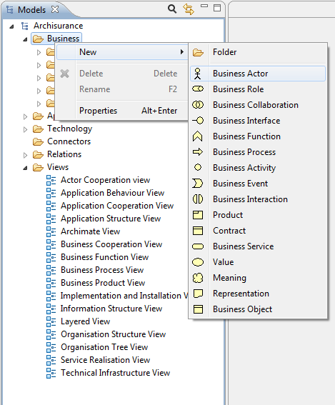

To add new ArchiMate elements directly to the Model Tree, select one of the folders, "Business", "Application", "Technology" or "Connectors" and right-click. A "New" menu item allows you to add new elements to the tree:

Adding a new element directly to the Model Tree
When the element is added to the Model Tree, the focus is given to the element and you can provide a new name for it.
Note that it is not possible to add relationships directly to the Model Tree as these can only be added by drawing them in the View (diagram) editor window.